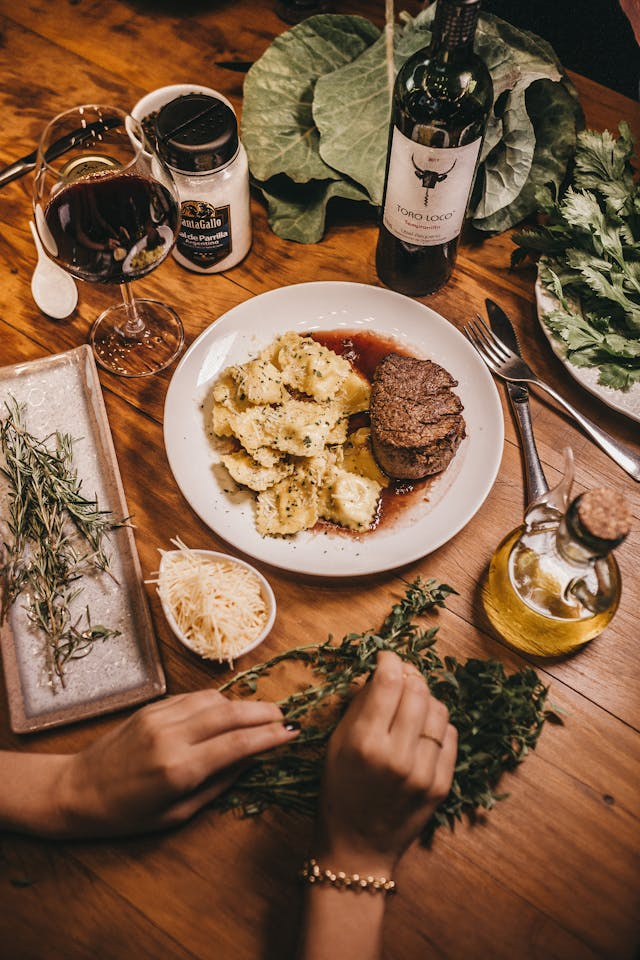

Home
Chicken Curry with Coconut

Description
The classic cheesesteak recipe features thinly sliced beef, sautéed onions,
and melted cheese all piled high on a soft hoagie roll.
It´s a hearty, flavorful sandwich that brings the taste of Philadelfia right to your kitchen.
Ingredients
- 1 lb (450 g) ribeye steak, thinly sliced
- 1 tablespoon vegetable oil or butter
- 1 medium onion, thinly sliced
- Salt and black pepper, to taste
- 4 slices provolone cheese (or Cheez Whiz / American cheese, if preferred)
- 2 hoagie rolls of long sandwich rools
- Optional toppings: sautéed bell peppers, mushrooms, or hot peppers
Steps
-
Prepare the beef:
Place the ribeye steak in the freezer for about 30 minutes to firm it up slightly.
Then, slice it as thinly as possible across the again.
-
Cook the onions:
Heat the oil or butter in a large skillet over medium heat. Add slice onions and cook for 5-7
minutes, until soft and lightly caramelized. Remove from the pan and set aside.
-
Cook the beef:
In the same skillet, add the sliced beef. Season with salt and pepper. Cook for 3-5 minutes, stirring
occasionally, until browned and cooked through.
-
Combine onions and beef:
Return the onions to the skillet and mix them with the beef. Taste and adjust seasoning if needed.
-
Melt the cheese:
Lay the cheese slices over beef and onion mixture. COver the pan for about 1 minute, just until the
cheese melts.
-
Assemble the sandwich:
Slice the hoagie rolls open and slightly toast them if desired. Spoon the cheesy beef and onion mixture
evenly into each roll
-
Serve and enjoy:
Serve warm with your favorites sides, like fries or chips.